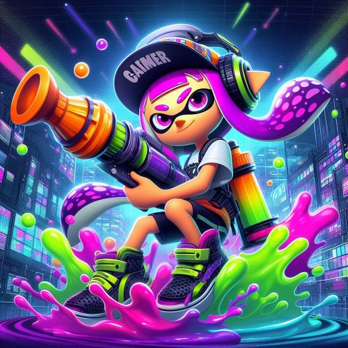
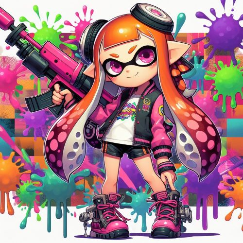
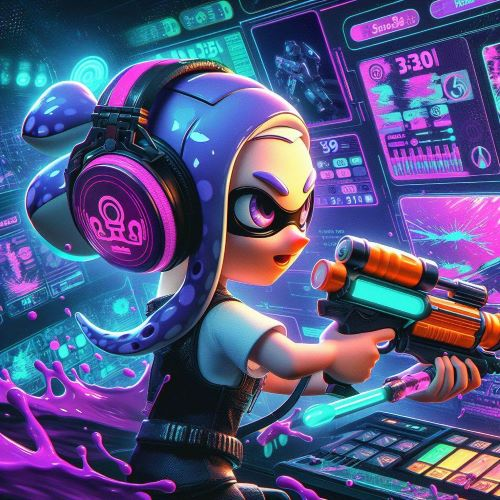

Splatoon is a popular third-person shooter video game franchise developed and published by Nintendo. It was first released for the Wii U console in 2015, and later for the Nintendo Switch in 2017 with its sequel, Splatoon 2. The game's unique selling point is its emphasis on ink-based, team-based combat rather than traditional shooting mechanics.
Gameplay
Splatoon focuses on multiplayer matches where two teams of four players each compete against each other in various game modes. The primary mode, Turf War, tasks players with covering as much of the arena floor with their team's colored ink as possible within a time limit. The team that covers the most territory wins. Other modes include Ranked Battles, which include objective-based modes like Splat Zones, Tower Control, and Rainmaker.

AI generated image using Bing
Gameplay Modes
Splatoon 1
Splatoon 2
offer various multiplayer modes, including Turf War (the signature mode), Ranked Battles and League Battles.
Splatoon 2 includes new maps, weapons, and modes like Clam Blitz and Salmon Run, adding depth and variety to the multiplayer experience.
Ink Mechanic
Instead of bullets, players shoot colored ink from various weapons, which can be guns, rollers, brushes, or even buckets. In addition to attacking opponents, the ink serves multiple purposes, such as covering territory, hiding, and swimming. Players can dive into the ink, allowing them to move faster, hide from enemies, and refill their ink supply.
Character Customizations
Players control characters known as Inklings, humanoid beings who can transform between kid and squid forms. Inklings are customizable in terms of appearance, gear, and weaponry. Gear provides various bonuses and abilities that can affect gameplay, such as faster ink recovery or increased movement speed.

AI generated image using Bing
Multiplayer & Online Play
Splatoon heavily emphasizes online multiplayer gameplay. Players can team up with friends or random players online to compete in matches. The game also features regular events, updates, and special Splatfest events where players choose between two teams and compete for supremacy in unique competitions.
Single-Player Campaign
While the main focus is on multiplayer, Splatoon and Splatoon 2 both feature single-player campaigns. These campaigns consist of a series of levels where players navigate platforming challenges, defeat enemies, and ultimately face off against boss characters. The single-player mode helps players learn the game mechanics and serves as a fun diversion from the multiplayer action.

AI generated image using Bing
Single-Player Campaign
Splatoon 1
Splatoon 2
Splatoon's single-player campaign is praised for its creativity and level design, though it's relatively short.
Splatoon 2 expands on the single-player experience, offering more levels, challenges, and a deeper narrative.
Community and Culture
Splatoon has cultivated a vibrant and dedicated community known for its creativity, including fan art, cosplay, and music. The game's unique style, colorful aesthetic, and catchy soundtrack have contributed to its popularity and helped establish it as a significant franchise for Nintendo.